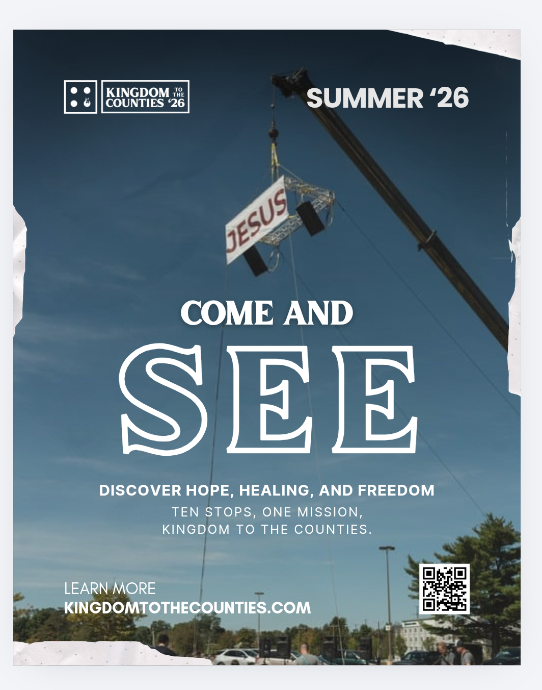

Live Now
Event Day
Auto-updates by the clock — no refreshing needed.
Loading…
—
🎚️ Leader preview — scrub the day to test it
Order of Events
The Day
Saturday · Setup 9:00 AM → Program 2:00–5:00 PM SHARP
Operations
Specialists
Production, attendance & build tools.
Leaders Only
Dashboard
Demo modeArrival
Check In
Demo modeAttendance
Attendance Counter
Demo modeCount non-volunteer attendees as they arrive. Everyone counting sees the same total — it syncs live across phones. Use −1 for corrections.
Production Build · Fri + Sat
Setup Checklist
Demo modeTech · FOH · Worship
Tech I/O List
Enter your initials, then tap each input to check it off as it's patched & line-checked — your initials & time are logged on the card.
Leaders can Edit list or Reload roster from defaults after entering the PIN.
Communication
Post
Praise, issues & announcements.
From Leadership
Announcements
Demo modeGive God glory
Praise Wall
Demo modeNeeds attention
Report an Issue
Demo modeReal emergency (medical / safety)? Find a leader or call 911 in person first — then log it here.
Who to reach
Leader Contacts
Draft · Sample numbersTap the green phone to call, the orange bubble to text. 📞
Share the Word
Graphics for Sharing!
Draft · 1 graphic + promo videoTap download, then share to your stories & feeds. 📲

{kind=link}
Give
Support the Mission
Help us bring New Hampshire back to Jesus — open-air revival in all 10 counties.
❤️ Give Now📊 Where your gift goes
Each county event costs about $16,575. Here's the breakdown:
🤝 Large & legacy gifts
For major gifts, planned giving, stock, crypto, real estate, vehicles, or in-kind donations, reach out to Zach Silk (Founder, The Fourth Ministries) — he'll personally walk you through it.
📬 Check or money order
Payable to The Fourth Ministries, Inc. — mail to:
Attn: Treasurer · PO Box 105 · West Nottingham, NH 03291
🎁 More ways to give
- IRA Qualified Charitable Distribution (QCD)
- Donor Advised Fund (DAF) grant
- Appreciated stock, crypto, precious metals
- Real estate, vehicles, collectibles
- Bequests & life insurance beneficiary
📦 Give in-kind
Bibles & booklets, volunteer lunch, snacks & water, gas cards, porta-potties, parking supplies, printed marketing.
ℹ️ Ministry info
The Fourth Ministries, Inc. is a 501(c)(3) non-profit.
Tax ID (EIN): 39-4933227 — gifts are tax-deductible.
Reference
Ambassador Resources
Guides, check-in, contacts & graphics.
Ambassador
Playbook
Your full field guide · V2📞Leadership Contacts
Event-day · tap to call or email▶
If you need help, have a question, or hit a situation that needs leadership — reach out. Do NOT try to handle a major situation alone.
🪖Culture
Who we are · how we move · why we're here▶
An Ambassador is the Swiss Army knife of the K2C event team. Ambassadors are our volunteers. Volunteers are our Ambassadors. We use both terms on purpose — whether you're doing worship, sound, parking, medical, logistics, or just showing up ready to serve. Every volunteer is an Ambassador first, and a specialist second.
No matter which county you're from, you are welcome and wanted at all K2C events. K2C is an "all hands on deck" call. If there's a gap, an Ambassador fills it. If a soul needs Jesus, an Ambassador goes to them. Full stop.
🎯 The Two Primary Objectives
#1 — Build NEW relationships. Talk to people — not about K2C or logistics, but about them. Their life, their story, what brought them out. Every person who walks away genuinely seen and known is a win. Don't default to your usual friends. Go meet someone new — and make sure every guest is GREETED and feels welcome.
You are also the prayer team. There is no prayer tent — that's the Ambassadors' role. Every Ambassador wears a designated necklace tag, and every Ambassador IS the prayer team. If possible: men pray for men, women pray for women.
#2 — Assist (if desired) with specialty roles. You may serve in a specialty — worship, logistics, security, parking, medical, A/V. Specialists are always primarily Ambassadors. There's no obligation to take a specialty — we need both. Talk to your team lead if you feel called.
You are a Field and Follow-Up team. You're on the front lines making sure no new believer falls through the cracks. You're a minister without the mic.
🚶 Go. Do NOT wait behind a table.
We do NOT sit behind a table and wait for people to come to us. Jesus didn't. He said GO and make disciples.
"Go therefore and make disciples of all the nations, baptizing them in the name of the Father and the Son and the Holy Spirit."Matthew 28:19 · NASB 2020
🪖 The Marine Corps Principle — Rifleman First
Every Marine — cook, mechanic, or pilot — is a rifleman FIRST. K2C Ambassadors are the same. You might be on worship, sound, parking, or gifts. That's your specialty. But the moment someone steps forward and gives their life to Jesus… you are a rifleman. Drop what you're doing and go to that person.
Field and follow-up with people is ALWAYS the mission. Everything else is preparation.
✝️ Ministry vs. The Business of Ministry
There's a difference between doing ministry and doing the business of ministry. Both matter. But they are not equal — and not interchangeable.
"Martha, Martha, you are worried and bothered about so many things; but only one thing is necessary, for Mary has chosen the good part, which shall not be taken away from her."Luke 10:41–42 · NASB 2020
The business of ministry is the tent, AV, parking, medical, the crane, sound check, setup, teardown. Necessary — and we're grateful for everyone who serves there. Ministry itself is the conversation, the prayer, the arm around a shoulder, the eye contact with someone standing alone.
The business of ministry should NEVER take precedence over ministry itself. Carrying a crate and see someone who needs a conversation? Set down the crate. The systems serve the people — never the other way around.
🙏Before Event Day
Show up prayed up▶
The event does not start at 2:00 PM. It starts days before. The week leading up to every K2C event should look like this:
Be sure your life is right with Christ before you come. Confess your sins. Repent. Walk hand-in-hand with Jesus. Pray specifically all week. Pray for the Holy Spirit to guide you with every person you meet. Do not show up cold. Show up ON FIRE and fully prayed up.
You cannot give what you do not have. To bring the presence of God to someone else, you need to have been in His presence yourself. The field will test you. Come ready.
🛠️ Friday Setup Day (Optional)
Optional setup runs 9:00 AM – 5:00 PM the day before every Saturday event. Friday focuses on Technology & Logistics — sound, FOH, parking plans, band area, crane logistics, and senior leadership planning.
🗺️The Field
Know it before doors open▶
The K2C field is a traditional event setup — Band & Speaker Tent on one side, audience facing the band. There is no raised stage. The only elevated element is the Name of Jesus (the crane and JESUS banner). The Cross stands at the front of the invitation zone as the altar point.
🎨 Tent Color Codes
🙏 Invitation Zone Protocol
No ropes. No barriers. The host verbally asks the crowd near the front to step back and make room. Responders step forward TO THE CROSS. Ambassadors approach them there — but never interrupt someone still deep in a moment with God.
⏰Order of Events
Setup AM + event-day timeline▶
🌅 Saturday Morning Setup · 8 AM – 1 PM
⏰ Event Program · 2 PM – 5 PM SHARP
Soft keys/acoustic plays during Intro, TTT Moments, Gospel Presentations, and Altar Call response windows — a band break that keeps the atmosphere warm. Official setlist lives in Planning Center Services.
🌅After 5:00 PM
Ministry continues▶
📲Media Coverage
Every phone is a broadcast tower · #K2C2026▶
Every Ambassador is also on the media team. There's no dedicated social crew. Every phone is broadcast equipment for the gospel. The more we go live, the more NH sees what God is doing in their backyard.
#K2C2026 — every post, stream, story, clip, platform. ONE hashtag. Always. Get the CRANE and JESUS BANNER in as many shots as possible.
📊 The Media Hierarchy
📸 What to Capture
- The CRANE and JESUS banner — in as many shots as possible
- Worship moments — hands raised, faces lifted, genuine response
- The gospel presentation being declared over the crowd
- People stepping forward at the altar call — from a respectful distance, no close-ups without consent
- Wide crowd shots — show the scale of what God is doing
✅ Pre-Event Tech Checklist
- Device charged to 100%
- Portable power bank in hand
- Hotspot / wifi backup confirmed — rural NH means spotty signal
- Social accounts logged in and ready
- SharePoint bookmarked: bit.ly/uploadk2c
- Test a 30-second live stream during Worship Set 1
🎤 Talking Points While Live
- "We are LIVE at Kingdom to the Counties in [County], NH. #K2C2026"
- "The gospel is being preached right now and JESUS IS ABOUT TO HEAL AND SAVE."
- "If you're watching and want to give your life to Jesus, DM us right now."
- During altar call: "People are stepping forward to give their lives to Jesus. This is happening in NH RIGHT NOW."
🚫 Don'ts
- Don't talk over worship or the gospel presentation
- Don't zoom in on responders without consent
- Don't engage trolls — mute or block
- Don't miss a person in front of you because you're on your phone
"Behold, I send you out as sheep in the midst of wolves. Therefore, be wise as serpents and harmless as doves."Matthew 10:16 · NASB 2020
Social media is a catapult for the gospel — but the comments section is NOT the place to minister or debate theology. Be wise. Trust the Holy Spirit in you to set a good example.
❓FAQs
Notes from senior leadership▶
🌧️ Weather & Rescheduling
Rains on Friday (setup)? Setup continues with safe tasks only; Tech & Logistics adapt. Friday becomes a partial setup & planning day; weather-dependent work shifts to Saturday morning with extra hands. Bring raincoats.
Rains on Saturday? Event leadership decides Friday evening to move the main event to Sunday. Standard setup schedule applies on the rain day.
Rains during the event? We pause, secure/cover equipment, and follow the weather-safety plan. We may delay or shut down for safety. Guest Services & leadership direct attendees. The program may be trimmed on resume depending on crane availability.
Is Sunday always the rain date? Yes — every Sunday of the main event weekend is the official backup.
Rains all weekend? If both days wash out, the event is canceled for that county and will NOT be rescheduled for 2026. Final call is made early Sunday morning by leadership. Communication is paramount.
I serve at my church on Sundays — block out K2C weekends? Yes. Strongly encouraged NOT to serve at your local church on a K2C Sunday. A Saturday rainout moves everything to Sunday, and even Saturdays are long, hot days (8–12 hrs outdoors). Plan your rest.
📋 Permitting, Vendors & Food
External vendors selling goods? No — separate permits for 10 events isn't feasible. These events are short and ministry-focused.
Food trucks/vendors? No — prepared food requires extra permitting and inspection.
Snacks/water? Yes — free pre-packaged snacks and bottled water at the cooling tent. Meals not provided.
⏰ Event Day Operations
Gates open? 1:00 PM. All teams ready and parking operational by 1:00.
Teardown timeframe? Generally 1–3 hours (factoring in Christians fellowshipping 😄).
Who's responsible for teardown? Logistics coordinates via PA. Team Leads break down their own gear with their teams. A second-shift system (e.g., 2–8 PM) is recommended to reduce 12-hour days.
🛠️ Infrastructure & Safety
Pop-ups can't be staked Friday? Tent locations are marked Friday; full setup completes Saturday morning.
Overnight gear security? Coordinated by Tech & Logistics, varies by venue. Some venues allow overnight camping for oversight.
Command Post? The Guest Services tent. The GS Leader staffs it, manages radio traffic, handles safety, announcements, and emergency coordination. Also the muster/rally point in emergencies.
First Aid / medical? Led by Laura McCollum, R.N. Initial care until EMS arrives. Likely issues: heat stress, dehydration, slips/falls, minor injuries. Call 911 for serious emergencies.
🏗️ Crane & Banner Rig
Crane arrives? 11:00 AM on event day.
Operator on site all day? Scheduled 11:00 AM – 5:00 PM — raises the rig at noon, returns to lower it at the end.
Banner up? No later than 12:00 PM.
Crane departs? 5:00 PM, immediately after the rig is lowered. Parking Team prioritizes crane exit (billed hourly) — this is why the event has a hard 5:00 PM stop.
Speakers on the rig? Not real ones — speaker "shells" give the appearance of flying speakers. Actual FOH speakers are built at ground level. Helps with safety and permitting (no electrical wired "up").
🪖 Ambassador Expectations
Prep? Ambassadors meet with Jeff & Rich to review the ministry plan and set the tone. They position near worship and the banner to welcome and engage guests.
During/after the altar call? Ambassadors "intercept" new believers who respond, gather info, support next steps, and coordinate follow-up — guided by Jeff & Rich.
Why time for post-event dinners? Real discipleship begins in smaller settings. The 2–5 PM window creates space to take new believers to dinner, build relationships, and plug them into a local church. Ambassadors with new-believer or networking "dinner dates" are exempt from cleanup.
🎤 Main Event Program
Same program for all 10 events? Mostly yes. Speakers and teams may vary by county, but call times, setup days, worship sets, speaking segments, and flow stay consistent — it honors the work and makes 10 events feasible. The program is intentionally designed with room for the Spirit to move uniquely in each location.
On-site baptism? No. After prayer, we've chosen not to offer on-site baptism at K2C 2026. Baptism needs preparation and follow-up best provided by the local church a new believer connects with. Not ruled out for future events designed for it.
🙏The Altar Call Moment
Two-call protocol · for counselors▶
We want EVERY Ambassador to be a Counselor — as Christians we're called to "Go and make disciples of all nations" (Matthew 28:19). This is the most sacred sequence of the entire event. Two altar calls are planned; the protocol is the same for both. Follow it exactly.
❓ Why Two Altar Calls?
People arrive at different times. Some come late, some leave early. Two invitations — one at the midpoint, one near the end — ensure as many people as possible get a genuine chance to respond.
Both calls are general calls to repent from sin. We do not separate first-time believers from those returning. Whoever the Holy Spirit is drawing — first time or rededicating — is welcome at the cross. Same invitation. Same Savior. Same protocol.
🔄 The Altar Call Flow · Start to Finish
This is the program sequence from the front — what the preacher leads and what you'll see unfold. Know it cold so you can move in step with it. Your specific counselor actions are in Steps 1–9 below.
- During the gospel presentation, the preacher asks people to step back and make room around the cross — believing God is going to draw people to Himself.
- The preacher gives the invite — dedicate or rededicate your life to Jesus. He makes it clear this will be brief and you'll be back with the group you came with shortly, and he explains exactly what will happen: come to the cross, he'll lead a short prayer, a counselor will introduce themselves and celebrate with you, and you'll receive a Bible and other gifts.
- New believers, rededicators, and counselors all move to the cross together, at the same time. Once movement starts — if anyone is unable to come forward, raise your hand and keep it up, and a counselor will come to you. Music starts to build (still soft and light so everyone can still hear the preacher).
- The altar call response song [placeholder] plays soft — 2–3 min — while everyone gathers.
- The preacher leads the sinner's prayer, music stays soft.
- Amen → big musical celebration moment.
- Counselors relationally walk new believers from the cross to the Ambassador's tent, where their gift is — New Believer's Bible, a worship album CD, the Identity in Christ book, and a small wooden cross.
- The preacher opens the altar for anyone who needs prayer — physical, emotional, or spiritual healing, or a fresh touch from God. Same structure as step 3: come to the altar, and if you're unable to come, raise your hand and keep it up, a counselor will come to you. A worship song plays during this time.
- The worship team continues to play response songs until the next segment of the K2C program.
📋 Steps 1–9 · General Guidance
1 — Be ready. Follow-up card and pen in hand before the altar call begins. Know where the gifts are staged at the Ambassador Tent. Get in position near the invitation zone. Know who's around you. Check in with Jeff.
2 — The crowd steps back. The host asks everyone near the front to step back and clear the invitation zone. If you're near the front — step back too. Create the space.
3 — Move to the cross together. When the invitation goes out, new believers, rededicators, and counselors all move forward to the cross at the same time. As you go, begin scanning: who's crying? Who's visibly moved? Who came forward alone? Who's hesitant near you? Go quietly to anyone weeping, stand beside them, place a gentle hand on their shoulder, and pray SILENTLY. Don't start counseling yet — the response song is playing and the preacher will lead the sinner's prayer. Honor the moment. Reverence the presence of God above all else.
4 — The prayer, then the celebration. The preacher leads the sinner's prayer while the music stays soft — pray right along with the people beside you. At the "Amen," it breaks into a big celebration. NOW you connect — turn to the new believer beside you and begin.
5 — Go to your person, 1-on-1. Women go to women, men to men — no exceptions. One Ambassador per new believer — don't crowd them. Close your live stream, put your phone down. Walk over calmly. Smile. You're the first face of the Church they'll ever see.
6 — Questions first. Always. Don't preach at them — they just met Jesus. Be curious, warm, present. Ask, then listen:
- "What do you think just happened to you?"
- "Who do you believe Jesus is?"
- "What made you want to step forward today?"
15 minutes is enough for an initial connection. Listen, affirm, swap numbers, schedule next steps. Do NOT equate emotion with authenticity — some weep, some show nothing. Both are valid.
7 — Walk them to the gift. Relationally walk your new believer from the cross to the Ambassador Tent, where their gift is waiting — a New Believer's Bible, a worship album CD, the Identity in Christ book, and a small wooden cross. Walk through what's inside together. Critical: get their phone number and email. Do NOT ask for a mailing address at this stage.
8 — Stay with them. Take it offsite. Don't hand off and walk away. Sit with them through the closing. Walk out with them. As 5:00 approaches, move the conversation offsite.
9 — Offer dinner. "I'd love to take you and your family out to dinner this week. Would that be okay?" Congratulations — you're now discipling a baby Christian. This is the whole point.
⚡ When the Spirit Hits Hard
Sometimes God moves powerfully and overwhelmingly on someone. That's not a problem — it's a gift. Let them do business with God. Don't rush, manage, or explain it. Get alongside them. Pray. Stay present.
On rare occasions someone may manifest a demonic spirit. Don't panic. Don't make a scene. Get another Ambassador alongside you and CAST IT OUT — no special training required. Open your mouth and command it: "In the Name of Jesus, I command you to leave." If it persists, calmly move them to a quieter area and keep praying. Don't abandon them. Stay until they're set free, then lead them to Christ immediately.
👶The New Birth
Handle with fear and trembling▶
What you're about to witness is not a decision. Not a transaction. Not a checklist item. It is a BIRTH.
"Therefore if anyone is in Christ, this person is a new creation; the old things passed away; behold, new things have come."2 Corinthians 5:17 · NASB 2020
And birth is not clean. Not tidy. Not the polished moment we see on Sunday mornings. Birth is bloody, messy, loud, painful — and the most profound miracle on earth.
👐 Your Role: The Midwife
You're not the doctor. Not the theologian. Not the teacher. God is doing the work. Your role is what a midwife does: facilitate the miracle. Hold the new believer. Wrap them. Keep them warm. Tell them they're loved. Don't let them go. Then give them back to God — He's their Father. Not you.
🤝 What This Looks Like
This person just came out of darkness into blinding light. They may weep, shake, laugh, or be completely still — they may have no words. That's normal. That's birth. All they need from you right now:
- A warm, steady presence beside them — don't rush, don't fidget
- Eye contact and a genuine smile — you're the first face of the Church they'll see
- To hear: "I am so glad you're here. What just happened to you is real. And I am not going anywhere."
- Simple, honest love — nothing more, nothing less
💋 K.I.S.S. — Keep It Simple, Saint
They may ask something profound. Answer with another question:
- "That's such a good question. What do YOU think?"
- "Tell me more about what you're feeling right now."
- "What made you ask that?"
You're not deflecting — you're honoring the moment. Don't block the Holy Spirit. Your job is to stay present and let God finish what He started.
"In the same way, I tell you, there is joy in the presence of the angels of God over one sinner who repents."Luke 15:10 · NASB 2020
The angels are celebrating right now. Join the celebration. Humble yourself — what you're standing next to is a miracle. Handle it with reverence, not instruction.
🌱 Simple First Steps to Share
After the tears slow, offer six simple things — not a curriculum, just the next step:
- Read the Bible every day — start in the Gospel of John. One chapter is enough to begin.
- Pray every day — even if it's just talking to God like you're talking to me now.
- Find a good Bible-believing church near you. You weren't meant to do this alone.
- Know this: you are unconditionally forgiven. All of it. Gone.
- Eternal life is now yours — a fact, not a feeling. Jesus guaranteed it.
- The booklet in your gift bag is your first Bible study. Start there tonight.
Always close in prayer. Lay a hand on their shoulder and pray OUT LOUD over their new life, their family, the road ahead. Let the last thing they hear from you be blessing spoken in the Name of Jesus.
📋Follow-Up Protocol
Within 24 hours of the event▶
Follow-up is where discipleship lives or dies. A new believer who hears from someone within 24 hours is far more likely to take the next step. Do your part.
📝 Follow-Up Card — Fill Out On the Spot
Two copies per card — one stays with you, one goes to the ministry office. Fill it out during your 15-minute conversation.
- New believer's name
- Phone number — Priority 1, ask first
- Email address — Priority 2
- Mailing address — optional, only if freely offered. Don't push.
- Names of friends/family who came with them
- Ambassador name (yours)
- Type of response — Salvation / Dedication / Rededication / Prayer
- Next step committed to — dinner? coffee? church visit? phone call?
- Date of event and county
⚙️ Planning Center Integration
- The Fourth Ministry office enters cards into Planning Center within 24 hours
- Ambassador receives their assignment notification
- Ambassador initiates contact within 24 hours
- Follow-up progress logged in Planning Center
🎤TTT Moments
Tell · Testimony · Teaser (FYI)▶
TTT Moment 1: 2:25 PM · TTT Moment 2: 3:45 PM
A TTT Moment is not a sermon. It's a 10-minute moment of pure momentum — crowd-oriented, rooted in a real testimony, laser-focused on one thing: getting people to STAY for the gospel presentation and altar call.
📋 The Three T's — Hard Cap: 10 Minutes
✝️ Every TTT Must Point Toward
- The reality of Jesus — alive, King, here
- The invitation of the gospel — the door is open, come in
- The power of surrender — "Jesus died for the right to own you."
❌ What a TTT Moment Is NOT
- A full sermon or extended teaching
- A denominational statement or theological debate
- A plug for a church, book, or ministry
- An altar call — the gospel presentation handles that
Prayer Team
Counselor Booklet
Field Reference · v1🎯 Say This — The Exact Words
- receive Jesus as your personal Lord and Savior?
- commit your life to Jesus Christ?
- invite Jesus into your heart?
1 When Someone Comes Forward
The moment people start walking to the cross
- Pray silently for those already at the front and those still coming. Ask the Holy Spirit to match you with the right person.
- Wait for the signal. Do not start until pairing-up begins.
- Use the opening words above to introduce yourself and ask why they came.
- If they say yes: write their name on top of the "My Commitment" booklet and check the box for their decision.
2 Lead Them to Christ
Using the "My Commitment" booklet — go to Page 4 first, then Page 2
- Page 4 — "How to Receive Christ": Take them through each step. Read each Bible verse and explain what it means. Show the picture of the gap between them and God, and how the cross of Christ bridges it.
- Read the question at the bottom of Page 4 (are they ready to repent of their sin?). If they say yes, lead them in the prayer: "Repeat this prayer after me."
- Remind them: the prayer does not save them — it's the personal commitment to Jesus and receiving Him into their heart that brings eternal life.
- Page 2 — their first Bible study: Let them answer the questions. The answer to question 2 is "in my heart." The other answers are printed in bold.
3 Fill Out the Follow-Up Card
So their church can follow up
Start with: "And your last name is?" Then age and address.
- Bear down with a ballpoint pen. Print legibly. Ask them to spell their name.
- Extremely important: the name & address of the church they attend.
- Ask who invited them or told them about K2C — friend or relative, and which church they go to.
- Only a Bible-believing / evangelical church will receive their name for follow-up.
4 If They Say "Rededication"
Make sure it's not really a first time
Some people say they're "rededicating" but have never truly received Jesus. Ask these to learn their real spiritual condition. If you have any doubt, treat it as a first-time commitment (Page 4, then Page 2).
- "When did you become a Christian?" — No one is born a Christian or is one "all their life." At some point a person commits their life to Christ.
- "When were you born again?" — If they don't know what that means, they likely are not yet a Christian.
- "If you died tonight, are you absolutely sure you'd go to heaven?" — or — "If God asked, 'Why should I accept you into heaven?' what would you say?"
If it truly is a rededication: take them to Page 3 only, review it, then fill out the card just like a first-time commitment.
5 Special Need ("Other")
Rare — someone wants to talk
They may say, "I want to talk about a special need." Ask questions to find out if they're a believer.
- Not a believer? Take them to Page 4, then Page 2.
- A believer? Help and counsel them. Need backup? Raise your hand and a supervisor will come.
6 Counseling Children
Usually with their parents
- Children most often come forward with their parents. Be sensitive to the Holy Spirit's leading.
- Fill out their info on the card just like anyone else. Parents will often help with address, church, and who invited them.
7 Encouraging Words
After the official steps are done
If there's time, share these next steps:
- Read the Bible every day — start in the Gospel of John.
- Pick up the "Our Daily Bread" devotional at the front and read it daily.
- Memorize Scripture — begin with the verses in the "My Commitment" booklet.
- Pray every day.
- Find a good Bible-teaching / evangelical church.
- Grab tracts, booklets, and magazines at the FREE Christian literature table.
8 Close & Follow-Up
How to end well
- Always close your time together with a personal prayer.
- Send them a personal letter of encouragement within 5 days.
9 Helpful Hints
Before & during the event
- Get your own heart right with Christ first — confess, repent, walk with Jesus.
- Pray all week. Ask the Holy Spirit to guide you with everyone you counsel.
- Show God's love: emphasize unconditional forgiveness (no matter their past) and the guarantee of eternal life for a serious commitment.
- Keep it simple and basic. Don't try to be a theologian.
- Sign in at the Ambassadors Information Table to pick up your badge.
- Look neat and clean. Smell nice — bring breath mints or spray.
- Wear your badge on your right side. No badge = no counseling.
- Match your own age and gender when you can — but follow the Holy Spirit.
- At the altar call, bring only the materials given to you. Small 4×6 clipboard only — no large ones. Bring extra pens.
- Record testimonies and stories in the notebooks at the counselor tables.
10 During the Invitation
The altar call flow at the cross
Stay in a spirit of prayer the whole time. Join the prayer team beforehand whenever you can.
- Listen for when to go forward — usually 4–6 chances to come to the cross.
- Face the cross, but don't walk all the way up to it.
- Watch who's coming (age, gender, families, couples, anyone crying). Go to anyone crying — stand beside them, hand on their shoulder, pray silently.
- Do not start counseling until the evangelist signals and pairing-up begins.
- Once counseling, move to a seat if that's more comfortable.
- No one to counsel? Don't leave yet — you may be sent into the audience to pray.
- Be ready to counsel more than one person at once if we're short on counselors.
Recording Studio
Invite Video Scripts 🎬
Demo modeTap Open to record with the on-screen teleprompter. Every finished video goes to Laura (Marketing) — then mark it ✅ so the team sees it's covered.